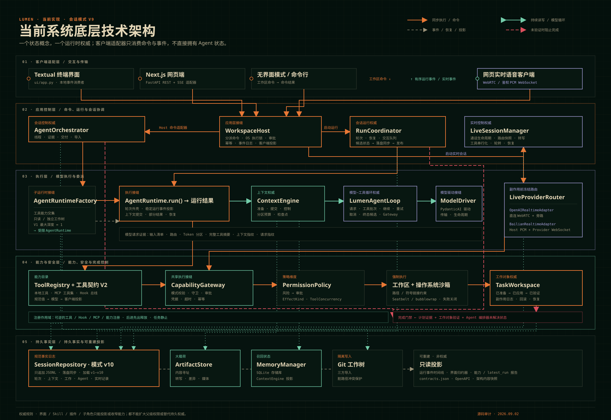

{kind=link}
TUI、Web、CLI 和 Realtime 都通过 WorkspaceHost command Interface；OS execution lock 只阻止跨进程 writer，UI reducer 只是投影。
Lumen Architecture Atlas
权威运行拓扑 · AUTHORITY MAP一次 Prompt 穿过唯一权威 Module 的实际路径；实线是执行，双线是读写，虚线是事件与恢复。
Textual TUIclient adapter
Next.js Webclient adapter
Headlessclient adapter
WorkspaceCommand ↓↑ RunEvent
→
→
⇄
TaskWorkspaceeffect · verify · gate
AgentOrchestratorthreads · evidence · import
CapabilityGatewayguard · approval · receipt
SessionRepositoryv10 append-only JSONL
ProviderRequestReceipt route · tokens · tool digest
Tool Contract V2 canonical · model · client
RegistrationScope task quiescence · LIFO disposer
AUTHORITY LEDGERREV · 2026.09
- Session
- v10 · append-only
- Config
- v2 · strict
- Sandbox
- workspace_write
- Tool contract
- V2 · 3 projections
- Catalog
- contracts.json · v7
- Request receipt
- terminal turn ledger
- Capabilities
- CLI · TUI · Web
- Lifecycle
- scoped · reversible
- Mutation
- expected revision
源码、schema 与契约测试已交叉核对
01
系统全景
五个技术平面、两条执行路径和一条共享能力安全链，构成当前实现的底层权威拓扑。
当前系统底层技术架构
文字 Runtime、Realtime、多 Agent、能力安全与持久事实的一张权威总图
实线是同步执行，虚线是事件或投影，双向线是持续读写，红色截断线表示未满足门禁时禁止完成。

文字 Runtime 与 Live Provider 路由不同，但工具都回到 ToolRegistry、CapabilityGateway 与同一权限策略。
Session v10 保存完整事实；ContextEngine 只构造下一次模型请求所需的有界 active history。
Plan evidence、TaskWorkspace verification 和 AgentOrchestrator unresolved state 任一未满足都会阻止完成。
02
核心 Modules
用最小 interface 隐藏最大实现复杂度，是 Lumen 当前架构的主要组织方式。
APPLICATION · 应用层
dispatch(command)WorkspaceHost
统一客户端命令、进程内 active run、跨进程 execution lock、事件 journal、审批状态和模型切换。
- 输入：WorkspaceCommand
- 输出：CommandResult / EventEnvelope
- 不变量：一个 workspace 至多一个执行 writer；只读操作保持可用
SESSION · 会话层
run(input)RunCoordinator
拥有可恢复 session 状态，把 runtime outcome 原子投影为下一状态与持久化 turn。
- active history + checkpoint
- plan + 恢复边界
- 完整历史属于 Repository；交互队列属于 Runtime
EXECUTION · 执行层
run(...) → RunOutcomeAgentRuntime
保持稳定 RunOutcome/RunEvent 外壳；唯一委托 LumenAgentLoop，并拥有 Driver 生命周期。
- 请求清单、流式文本回撤与分阶段计时
- 默认安全并发；工具完成立即显示，模型结果按调用顺序回填
- 工具审批、Hook、恢复与交互输入
- provider retry + partial outcome
CONTEXT · 上下文层
prepare / prepare_step / commit / controlContextEngine
管理 zone 预算、压缩 checkpoint、memory recall 和 active history。
- fingerprint 防错配
- 安全 cut point
- raw history 永不因压缩删除
03
Agent 主循环
一条 prompt 从 UI 进入后，跨越应用、会话、上下文和工具四个 seam，直到形成可审计结果。
用户 / 客户端应用主机
WorkspaceHost会话协调器
RunCoordinatorAgent 执行器
AgentRuntime上下文引擎
ContextEngine模型 / 工具
WorkspaceHost会话协调器
RunCoordinatorAgent 执行器
AgentRuntime上下文引擎
ContextEngine模型 / 工具
1启动运行 StartRun(prompt) →幂等检查 · 获取 OS execution lock
2构造运行输入 RunInput →恢复会话状态
3历史 + 计划 history + plan →创建 runtime run
4装配上下文 prepare(...) →生成有界 ContextEnvelope
5请求预检 + ProviderRequestReceipt →冻结 route · token 分区 · tool digest
6Hook → 参数冻结 → 审批 → ToolGuard → 执行 ↻同一 validated invocation · canonical 结果回到模型
7提交新消息 commit(...) →ToolCallView / ToolResultView 只做展示
8运行结果 RunOutcome ←turn + receipts append + fsync
9唯一终止事件 + 最终结果 ←turn fsync 后发布 terminal 与 CoordinatorState
缓冲模型文本Buffering Text · 同步发送 TextDelta
↓
是否出现工具调用？本轮模型响应中是否包含 tool call
是 · YES ↓否 · NO ↓
进入工具执行路径
撤回暂定文本TextRetracted
↓
转为过程说明CommentaryDelta
↓
执行工具Tool Running · 结果返回模型
直接完成本轮响应
保留已输出文本无需回撤或调用工具
↓
形成最终回答Final Answer
模型供应商报错Provider error
↓
可安全重放且有重试额度？瞬时错误 · replay_safe · Retry-After
是 · YES ↓否 · NO ↓
同一请求内恢复
撤回本次候选文字半截工具参数不执行
↓
Loop 统一退避重试默认最多 5 次 · 抖动 · Retry-After
停止当前自动恢复
生成部分运行结果PartialRunOutcome
↓
持久化完整工具批次保留已知 usage 与恢复证据
04
上下文引擎
完整历史是事实，active history 是预算内投影。模型 profile 与传输协议解耦；Checkpoint V2 只增量处理新 transcript 区间。
0 tokens
模型上下文窗口
SYSTEM系统身份与运行指令固定保留 PINNED
POLICY行为规则与安全策略每轮注入 REINJECT
RUNTIME_CONTEXT 模型/工作区等瞬时运行上下文瞬时注入 · 4%
MEMORY_INDEX 长期记忆索引每轮注入 · 4%
CAPABILITY_CATALOG 工具与能力 Schema每轮注入 · 8%
TASK_STATE 计划、进度与任务状态每轮注入 · 10%
ACTIVE_SKILLS 当前 Session 的 Skill 快照每轮注入 · 10%
HISTORY_SUMMARY 历史压缩 Checkpoint摘要保留 · 5%
RECENT_HISTORY 安全边界后的近期消息弹性预算 PINNED
RECALLED_MEMORY 本轮召回的相关事实临时注入 · 6%
RETRIEVED_CONTEXT MCP 检索与外部内容可裁剪 · 20%
CURRENT_INPUT 展开后的当前用户输入固定保留 PINNED
OUTPUT_RESERVE 模型回答预留空间只预留 RESERVE
01Instructions冻结指令摘要
→
02Function Tools该步骤最终 schema
→
03System PolicyPlan + active Skills
→
04Canonical Historysummary + recent turns
→
05User Context DataMemory + MCP resources
→
06Current Input含边界交互输入
01请求间检查压力prepare_step · soft limit · cooldown
→
02保留目标与近期批次不拆开模型调用与工具结果
→
03只处理新增区间从 previous checkpoint 之后开始
→
04生成结构化摘要使用禁用工具的 summarizer
→
05合并候选 Checkpoint V2以最后持久节点为父 · source_end
→
06持久化后发布append + fsync 后推进 cursor
✓ tool call / result 不分离✓ 每个 tool result 独立截断✓ raw JSONL 永远追加✓ fingerprint 防错配
Model Policy
显式覆盖 → profile → 精确 slug → 80k fallback；协议前缀不决定窗口或 tokenizer。
context/profiles.pyArtifact
巨型工具结果进入内容寻址存储；上下文只保留预览、digest 与 reference。
context/artifacts.pyDurable Memory
SQLite 是权威库，Markdown 是审计投影；事实必须携带 provenance。
context/memory/Trust
MCP 外部内容不能单独提升为长期事实；自动学习默认关闭。
memory.learn: false05
工具、权限与安全
工具先被描述和分类，再经过策略、Hook 与审批。执行安全由多层机制共同形成。
1Tool Contract V2参数 · 输出 · 展示 · 并发
→
2三轴分类Risk · EffectKind · ToolConcurrency
→
3执行前 Hook拒绝调用或修改参数
→
4Schema 冻结validate · coerce · immutable identity
→
5用户审批 Gate看到最终执行参数
→
6单调 ToolGuard同一 identity · abstain / deny
→
7执行 Execute限制在 workspace 范围
→
8执行后 Hook仅变换模型文本投影
→
9三种投影canonical · model text · ToolResultView
read_file · search_text
默认允许write_file · edit_file
按模式审批run_command · skill script
默认确认configured MCP risk
依策略决定external_unknown
auto 仍确认审批是否允许此次操作
+
Confinement文件工具能访问哪里
≠
OS Sandbox进程真实系统与网络权限
三层均已实现：默认 workspace_write 使用 Seatbelt / bubblewrap，adapter 缺失时 fail closed；仅显式 disabled 才放弃 OS 隔离。
Expected revision
文件 mutation 先取得 sha256: revision 或 missing；冲突返回 STALE_RESOURCE，不会猜测覆盖。
tools/workspace.pyMonotonic guard
ToolGuard 只有 abstain / deny。任一拒绝都不能被后续 Hook 或 Adapter 放宽。
tools/gateway.pyReplayable view
工具卡片从 durable args/result 纯函数派生；renderer 失败只回退展示，不改变真实结果。
tools/presentation.py06
会话、事件与客户端
所有用户可见状态都由类型化事件驱动，同一事件流同时服务实时 UI、重连和审计。
Textual TUI
FastAPI / SSE
Next.js Web
↑ 实时订阅 live subscribe↑ 按序号断线续传 after_sequence
01运行开始RunStarted
02文本增量TextDelta
03工具开始ToolCallStarted
04等待审批ToolApprovalPending
05工具完成ToolCallFinished
06运行完成fsync 后 RunCompleted
EventJournal内存有序事件流
→Session v10 Journal只追加的类型化 JSONL records
→恢复 resume()消息 · 计划 · checkpoint · 推理档位 · Agent · Live
✓ 普通增量实时发布✓ terminal candidate 先随 turn fsync✓ 每个 run 只公开一个 terminal✓ 持久化失败只发布 RunFailed
TurnRecord
user_inputstatusmessagesattachments[]request_receipts[]Audit
approvalsusagediagnosticspartial_textRecovery
active_prefixsummarycheckpointplanThinking
Provider 官方目录 · 端点/协议/精确 IDHost 查询 · Session 选择requested → effective → parameterschild 冻结继承Core shared
Session / Run / ApprovalSkill / MCP / ContextAttachmentRef 图片Web-only
Realtime voice图片选择 / 拖放 / 剪贴板TUI-only
! command@图片路径 / 路径粘贴Unsupported / Planned
终端二进制剪贴板图片预览与裁剪07
扩展体系与子 Agent
能力从多个 adapter 接入，但最终都进入同一个 runtime 工具和上下文模型。
内置工具 Built-in读取 · 写入 · 命令执行
Python 插件注册 list[ToolSpec]
MCP 工具集可独立停用 · 延迟 Schema · 风险分类
AgentRuntime统一的执行边界 execution seam
MCP 内容资源 · Prompt · OAuth
Agent Skills目录 · 工作集 · 脚本
HookBus 事件钩子执行前 · 执行后 · 停止
根 Agent · Rootspawn / message / follow-up / wait / close
↙↓↘
Explorer共享 workspaceobserve 工具交集
Default隔离 worktree能力只收窄
Worker隔离 worktree显式导入结果
结果回传 ↑ · 并发与权限持续约束；请求数 / 工具数 / 总时限仅显式配置时限制
× 禁止递归委派× 禁止扩大权限× 禁止覆盖 dirty path× 未验证不得完成
08
MCP 与 Skills 深入说明
MCP 连接外部能力，Skill 提供按需加载的专业方法；Kimi 与百炼 Qwen 的 provider 原生 web_search 按精确路由随冻结模型请求发送，三者不共享开关或状态权威。DeepSeek 当前 Responses 忽略内置搜索，不能仅凭接口接受参数认定支持。
M
MODEL CONTEXT PROTOCOL
MCP：连接外部系统
通过标准协议接入远端或本地 Server，把工具、资源和 Prompt 暴露给 Lumen。
- 本质
- 协议连接与能力适配器
- 传输
- stdio / streamable HTTP
- 进入 Runtime
- MCPToolset + Context documents
- 默认信任
- 未分类工具 = external_unknown
S
AGENT SKILLS
Skill：提供专业方法
本地目录中的指令包。它不是工具；模型先看到精简目录，匹配任务后再加载完整 SKILL.md。
- 本质
- 指令、参考资料与声明脚本
- 来源
- builtin ＜ user ＜ project
- 进入 Context
- catalog + session artifact snapshot
- 默认信任
- 受发现根目录与相对路径约束
01读取 Server 配置transport · required · source scope
→
02信任与指纹检查definition fingerprint · approval
→
03建立连接stdio 或 HTTP + OAuth
→
04名称隔离<server>_<tool> 前缀
→
05风险与可见性deny filter · risk · deferred schema
→
06审批后执行PermissionPolicy + HookBus
→
07传输韧性observe 断线重试一次 · 未知动作先对账
→
08返回 Observation结果进入模型与工具循环
默认延迟完整 Schema；名称和描述仍可被搜索。always_load_tools 可声明常驻工具。
启动时只发现目录；显式激活后保存当前 Session 的 artifact snapshot，并以 user-role 不可信数据进入 RETRIEVED_CONTEXT。
显式调用时才向 Server 渲染，并包装为不可信外部模板；模板正文不能授予权限。
01扫描技能目录.lumen/skills · user · builtin
→
02解析 SKILL.mdfrontmatter + Markdown body
→
03注入精简 Catalogname · description · location
→
04按需激活load_skill 或 /skill:name
→
05保存 Artifact0600 · content addressed
→
06Session 重注入resume 同一 revision
→
07读取资源 / 脚本限定相对路径与声明清单
skill-name/├── SKILL.md├── references/└── scripts/frontmattername + description
disable-model-invocation 可让 Skill 仅允许手动调用。
resourcesread_skill_resource
只能读取该 Skill 根目录中的 UTF-8 文本，解析后再次检查路径包含关系。
scriptsrun_skill_script
只运行声明的 py/sh/bash 文件；清理环境、限制超时，并按 EXECUTE 风险审批。
资源正文不能单独提升为长期事实；未声明 risk 的工具始终需要确认。
OAuth 仅支持 streamable HTTP；本地凭证文件使用权限收紧的持久化存储。
模型只能按已发现的名称加载 Skill，并且无法用相对路径逃逸其 base directory。
延迟 MCP Schema、Session Skill snapshot 和 Zone cap 共同控制上下文膨胀。
09
配置与资源生命周期
分层配置先解析来源与信任，再由 StrictModel 验证；运行资源按事务式生命周期打开和切换。
全局 Global~/.lumen
项目 Project.lumen/agent.yaml
本地 Localagent.local.yaml
→配置合并器来源 · 信任 · fingerprint
→AppConfig严格校验 · 禁止未知字段
已构造
Constructed
打开 open()Constructed
MCP 已连接
构建 buildRuntime 就绪
发布 ScopeLIFO disposer
关闭 close()已关闭
agentmodel profiles · overrides · limits · skills
toolsbuiltin · plugins · web fetch/search
mcp_serverstransport · risk · OAuth
permissionsmode · allow/deny · project rules
contextratio policy · recent · summary · background
memoryrecall · learn · work queue
agentsprofiles · concurrency · run limits
sandbox / liveOS isolation · Realtime routes
长任务持续执行
默认无次数与模型总时限硬墙；300 秒流空闲随数据延续。同轮压缩，断流安全重试，完整工具批次可恢复。
配置、故障分类与踩坑记录 →RegistrationScope
只拥有 disposer 与后台 task；关闭时取消并等待 task，再按 LIFO 撤销注册。它不保存任何领域状态。
lifecycle.pyCapability observation
CLI、TUI、Web 共用一个只读投影，解释 tool/skill/MCP/profile 的实际可见性，不参与授权。
GET /api/v1/capabilitiesGenerated catalog
从运行时类型确定性生成；CI 检查 freshness，删除后可重建，不能反向成为运行 schema。
docs/generated/contracts.json没有匹配的章节
尝试搜索“ContextEngine”“审批”“MCP”或“session”。